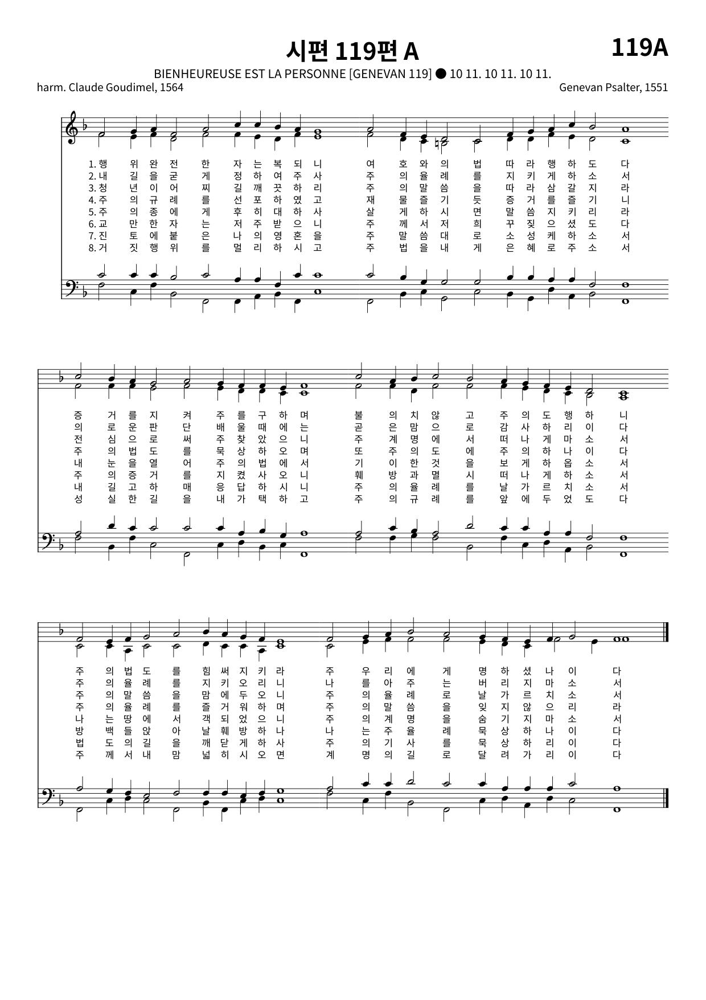

시편 119편 A
BIENHEUREUSE EST LA PERSONNE [GENEVAN 119] · 10 11. 10 11. 10 11.
곡조: Genevan Psalter, 1551 · 화성: Claude Goudimel, 1564 · 가사: 개역한글판 시편 119편 편역(AI 초벌 편역판 · 신학 감수 전) · 8절
시편 119편은 6곡으로 나누어 실었습니다: A B C D E F · 이 곡은 시편 119편 가사의 1~8번째 절입니다.
악보 PDF MusicXML(출력용) MusicXML(반주용, 전주·반복 포함) 개역한글 시편 119편 읽기
악보
← 시편 118편 목록반주 재생(준비 중)시편 119편 B →
가사
1절
행위 완전한 자는 복되니
여호와의 법 따라 행하도다
증거를 지켜 주를 구하며
불의치 않고 주의 도 행하니
주의 법도를 힘써 지키라
주 우리에게 명하셨나이다
행위 완전한 자는 복되니
여호와의 법 따라 행하도다
증거를 지켜 주를 구하며
불의치 않고 주의 도 행하니
주의 법도를 힘써 지키라
주 우리에게 명하셨나이다
2절
내 길을 굳게 정하여 주사
주의 율례를 지키게 하소서
의로운 판단 배울 때에는
곧은 맘으로 감사하리이다
주의 율례를 지키오리니
나를 아주는 버리지 마소서
내 길을 굳게 정하여 주사
주의 율례를 지키게 하소서
의로운 판단 배울 때에는
곧은 맘으로 감사하리이다
주의 율례를 지키오리니
나를 아주는 버리지 마소서
3절
청년이 어찌 길 깨끗하리
주의 말씀을 따라 삼갈지라
전심으로써 주 찾았으니
주 계명에서 떠나게 마소서
주의 말씀을 맘에 두오니
주의 율례로 날 가르치소서
청년이 어찌 길 깨끗하리
주의 말씀을 따라 삼갈지라
전심으로써 주 찾았으니
주 계명에서 떠나게 마소서
주의 말씀을 맘에 두오니
주의 율례로 날 가르치소서
4절
주의 규례를 선포하였고
재물 즐기듯 증거를 즐기니
주의 법도를 묵상하오며
또 주의 도에 주의하나이다
주의 율례를 즐거워하며
주의 말씀을 잊지 않으리라
주의 규례를 선포하였고
재물 즐기듯 증거를 즐기니
주의 법도를 묵상하오며
또 주의 도에 주의하나이다
주의 율례를 즐거워하며
주의 말씀을 잊지 않으리라
5절
주의 종에게 후히 대하사
살게 하시면 말씀 지키리라
내 눈을 열어 주의 법에서
기이한 것을 보게 하옵소서
나는 땅에서 객 되었으니
주의 계명을 숨기지 마소서
주의 종에게 후히 대하사
살게 하시면 말씀 지키리라
내 눈을 열어 주의 법에서
기이한 것을 보게 하옵소서
나는 땅에서 객 되었으니
주의 계명을 숨기지 마소서
6절
교만한 자는 저주 받으니
주께서 저희 꾸짖으셨도다
주의 증거를 지켰사오니
훼방과 멸시 떠나게 하소서
방백들 앉아 날 훼방하나
나는 주 율례 묵상하나이다
교만한 자는 저주 받으니
주께서 저희 꾸짖으셨도다
주의 증거를 지켰사오니
훼방과 멸시 떠나게 하소서
방백들 앉아 날 훼방하나
나는 주 율례 묵상하나이다
7절
진토에 붙은 나의 영혼을
주 말씀대로 소성케 하소서
내 길 고하매 응답하시니
주의 율례를 날 가르치소서
법도의 길을 깨닫게 하사
주의 기사를 묵상하리이다
진토에 붙은 나의 영혼을
주 말씀대로 소성케 하소서
내 길 고하매 응답하시니
주의 율례를 날 가르치소서
법도의 길을 깨닫게 하사
주의 기사를 묵상하리이다
8절
거짓 행위를 멀리 하시고
주 법을 내게 은혜로 주소서
성실한 길을 내가 택하고
주의 규례를 앞에 두었도다
주께서 내 맘 넓히시오면
계명의 길로 달려가리이다
거짓 행위를 멀리 하시고
주 법을 내게 은혜로 주소서
성실한 길을 내가 택하고
주의 규례를 앞에 두었도다
주께서 내 맘 넓히시오면
계명의 길로 달려가리이다